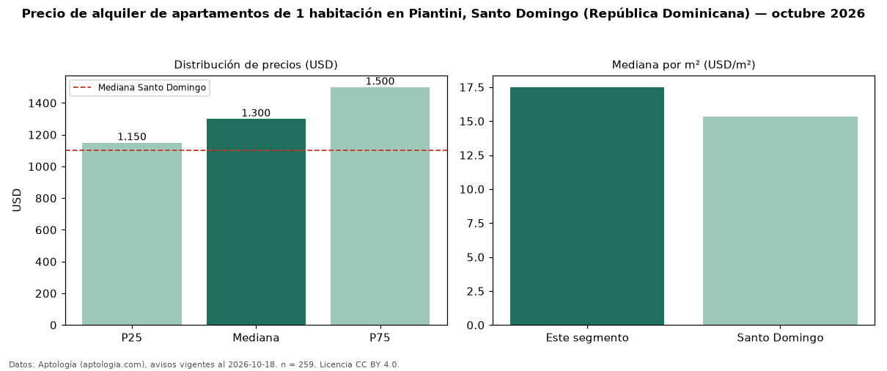

Precio de alquiler de apartamentos de 1 habitación en Piantini, Santo Domingo (República Dominicana) — octubre 2026
En Piantini, Santo Domingo (República Dominicana), la mediana de canon mensual de apartamentos de 1 habitación es USD 1.300, según 259 avisos vigentes. Frente a la mediana de Santo Domingo para apartamentos de 1 habitación (USD 1.100), queda 18 % por encima. Por metro cuadrado, la mediana es USD 17,50/m² al mes (n = 219 avisos con área), 14 % por encima de Santo Domingo (USD 15,31/m²). Son 44 % de los 583 avisos de apartamentos en alquiler de la zona, cuya mediana general es USD 1.600 (−19 %). Con el precio por m² de venta del mismo segmento (USD 3.145/m²), la rentabilidad bruta implícita es 6,7 % anual (aproximación con medianas de ofertas distintas). El área mediana anunciada es 76 m². La mitad central de los avisos va de USD 1.150 a USD 1.500 (razón 1,3), una dispersión baja. Datos: Aptología (aptologia.com), CC BY 4.0 — https://www.aptologia.com/do/alquiler/santo-domingo/piantini. Archivos: PDF, CSV con las cifras y gráfica PNG.

| Avisos únicos | 259 |
|---|---|
| Percentil 25 | COP 1.150 |
| Mediana | COP 1.300 |
| Percentil 75 | COP 1.500 |
| Mediana por m² | COP 17 |
Fuente: avisos vigentes de portales inmobiliarios recopilados por Aptología, deduplicados (mínimo 30 avisos únicos por celda). Precios pedidos, no cerrados. Fecha: 2026-10-18.